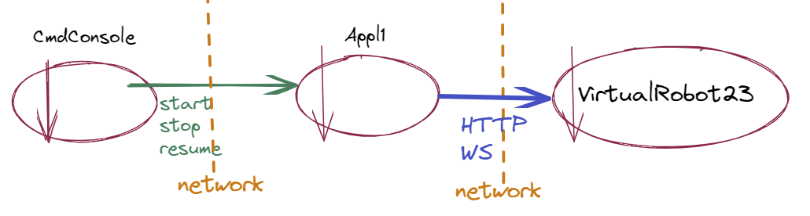

Applicazione1¶
In VirtualRobot23, si è detto che l’ambiente WEnv verrà utilizzato nello sviluppo di applicazioni proattive/reattive basate su componenti che interagiscono a scambio di messaggi con interazioni sincrone e/o asincrone.
Introduciamo qui i requisiti di una prima applicazione di questo tipo, dopo avere costruito il nostro ambiente di lavoro (workspace) come riportato in Primi passi operativi.
Appl1: Requisiti¶
Scrivere un programma Java che possa inviare al VirtualRobot (attraverso una Console remota):
un comando start per attivare il VirtualRobot in modo che percorra il bordo perimetrale della stanza rappresentata ne La scena di WEnv
un comando stop per bloccare l’azione del VirtualRobot.
un comando di resume per riattivare l’azione del VirtualRobot.
Appl1: Analisi dei requisiti¶
Dopo opportuni colloqui con il committente, possiano affermare che :
il VirtualRobot23 (d’ora in poi denominato anche semplicamwente robot) si trova inizialmente nella situazione descritta come Stato iniziale del virtualrobot;
l’applicazione può inviare comandi al robot sia con Interazione sincrona sia con Interazione asincrona;
un comando di stop inviato al robot che ha terminato il percorso non ha effetto;
un comando di resume inviato al robot che ha terminato il percorso equivale a un comando di start;
l’applicazione invia i comandi stop/resume sotto il controllo di un utente umano, attraverso la Console remota di comando.
CmdConsole¶
Per Console remota si intende il fatto che la Console di comando (che denominiamo CmdConsole) è collocata su un computer diverso da quello in cui gira l’applicazione.
Appl1: Analisi del problema¶
L’applicazione non agisce in modo autonomo, ma come conseguenza di comandi inviati da CmdConsole.
Una volta ricevuto il comando start, l’applicazione presenta un comportamento al contempo proattivo (in quanto deve effettuare in modo autonomo un giro della stanza) e reattivo (in quanto deve essere capace di percepire ed eseguire i comandi stop/resume).
Date queste premesse, siamo in grado di introdurre l’Architettura Logica del sistema.
Appl1: Architettura logica¶

{kind=link}
il sistema è logicamente formato da tre componenti:
VirtualRobot23, che viene fornito dal committente
Appl1, che dobbiamo realizzare
CmdConsole, che dobbiamo realizzare
Proseguiamo ora l’analisi, spostando l’attenzione su ciascuno dei componenti.
Appl1: Natura dei componenti¶
Il robot fornito da committente è un componente reattivo/proattivo che opera come un server che può ricevere comandi via rete tramita HTTP (Interazione sincrona) sulla porta
8090e tramite Connessione WebSocket (WS) sulla porta8091(Interazione asincrona. Il server può anche inviare suWSmessaggi che non siano risposte a comandi (si veda Messaggio di stato).Il componente Appl1 si presenta come un ente attivo che attende un comando (
start/stop/resume) da CmdConsole. Questi comandi possono essere inviati come messaggi via rete tramite un qualche protocolllo, non specificato; tra le scelte plausibili vi sonoTCP, UDP, MQTT, Bluetooth, CoAP. Appl1 deve interpretare i messaggi ricevuti, convertendoli in comandi a VirtualRobot23.Il componente CmdConsole si presenta come un ente attivo che interagisce con un utente umano e che invia comandi via rete ad Appl1.
Siamo di fronte a un sistema distribuito, che può operare su 3 nodi computazionali, che si riducono a 2 se la CmdConsole risiede sullo stesso nodo in cui risiede l’applicazione Appl1 e a 1 se anche VirtualRobot23 viene attivato sullo stesso nodo in cui risiede l’applicazione.
Appl1: Piano di lavoro¶
Il core-business dell’applicazione è di competenza del componente Appl1, che conviene sia progettato e realizzato per primo. La CmdConsole potrà essere progettata e realizzata in un secondo momento, prima in locale e poi nel distribuito.
Prima di procedere alla stesura del codice, occore affrontare la seguente problematica, del tutto generale:
Come impostare il testing dell’applicazione (inteso come User Acceptance Test)
Appl1: Piani di testing funzionale¶
Un punto cruciale è concepire la fase di testing come un processo eseguibile in modo automatizzato, cioè attraverso un programma che sia in grado, senza intervento umano, di controllare se l’applicazione, una volta attivata, fa tutto quello che ci si aspetta da lei.
Nascono quindi nuove importanti problematiche:
Consoscenza dello stato: Come può una procedura di testing conoscere lo stato del robot?
: Cosa si intende per stato del robot?
Appl1: Stato del robot¶
Dopo ulteriore collquio con il committente, si ritiene significativo, al momento, sapere, al termine della esecuzione dell’applicazione:
se il robot è fermo in HOME e ha effettuato un (solo) giro lungo il perimetro della stanza.
Si anche convenuto, che in futuro, potrebbe essere utile sapere:
quanti comandi di
stop/resumeil robot ha ricevuto ed elaboratoquale posizione il robot occupa nella stanza in un certo istante
se il robot ha incontrato ostacoli mobili lungo il percorso
etc/etc
Appl1: Azioni di testing pianificate¶
Concentrando al momento l’attenzione sul componente Appl1, possiamo pianificare le seguenti azioni di User Acceptance Test:
testStartNoStop. Dopo che Appl1 ha ricevuto (da CmdConsole) il comando start, occorre verificare che il robot abbia iniziato la sua attività, cioè sia in moto e che, al termine, esso risulti fermo in HOME avendo completato un giro.
testStop. Dopo che Appl1 ha ricevuto (da CmdConsole) il comando stop, occorre verificare che il robot sia fermo.
testResume. Dopo che Appl1 ha ricevuto (da CmdConsole) il comando resume, occorre procedere come per testStartNoStop.
Nel seguito, al fine di transitare da situazioni semplici a situazioni via via più complesse, svilupperemo l’applicazione in modo incrementale, distinguendo due macro-casi:
Applicazione1HTTP: imponiamo il vincolo di interagire con il VirtualRobot23 solo via HTTP.
Applicazione1HTTPeWS: ammettiamo anche la possibilità di interagire con il VirtualRobot23 anche via WebSocket.
Ricordiamo che:
complesso: Complesso è un insieme di elementi che possono essere anche molto semplici, ma che, collettivamente, generano qualcosa di nuovo e anche inaspettato. Il termine Complessità deriva dal latino complexus, ossia qualcosa di intrecciato, composto da una molteplicità di parti interdipendenti fra loro.
complicato: ha come sinonimi macchinoso, contorto, intricato, tortuoso.
Applicazione1HTTP¶
Imposteremo i seguenti SPRINT:
SPRINT1: affrontiamo il ‘core problem’ della applicazione, definito come la fase (proattiva) in cui il robot percorre il perimetro della stanza senza gestire i comandi stop/resume. Dopo una fase che produce codice non ben organizzato (unibo.http.FlatApplication1HTTPNoStop),
realizziamo la classe (che include il main) unibo.http.Appl1HTTPSprint1
iniziamo a ragionare su una Strategia di testing per BoundaryWalk che ci porterà a una prima test-unit TestAppl1HTTPSprint1, definita dopo avere introdotto un Modello della stanza.
Questo Sprint è sviluppato in: Appl1-HTTPSprint1.
SPRINT2: estendiamo il sistema prodotto nello SPRINT1 per realizzare la fase (reattiva) in cui il robot gestisce i comandi stop/resume.
concentriamo la logica applicativa nel POJO Appl1Core
distribuiamo una jar eseguibile basato sul main-configuratore unibo.appl1.http.Appl1HTTPSprint2.
Questo Sprint è sviluppato in: Appl1-HTTPSprint2.
SPRINT3: estendiamo il sistema prodotto nello SPRINT2 introducendo la Console remota. Questa fase ci indurrà a realizzare la interazione tra CmdConsole e Appl1 attraverso protocolli diversi da HTTP e WS, segnando la transizione da sistemi ad oggetti che interagiscono mediante procedure-call a sistemi a componenti attivi che interagiscono mediante messaggi.
iniziamo introducendo il concetto astratto di Interconnessione
costruiamo supporti che implementano il concetto Interconnessione usando protocolli quali
TCP, UDPed altri,distribuiamo una jar eseguibile basato sul main-configuratore unibo.appl1.http.Appl1HTTPSprint3.
Questo Sprint è sviluppato in: Appl1-HTTPSprint3.
Applicazione1HTTP Deliverables¶
TODO: Deliverables Applicazione1HTTP
Per ogni SPRINT:
Creare un progetto relativo allo SPRINT.
Con riferimento a quanto da noi sviluppato e alla struttura riportata in Il template, riassumere nel file denominato Appl1HTTPSprintNCognomeNomeVN.html (
VN=Version Number) in modo sintetico/essnziale i punti ritenuti significativi (con eventuali note personali) e includere il file nella directoryuserDocsdel progetto.Inviare via mail al docente una copia in pdf del file.
Applicazione1HTTPeWS¶
Opereremo impostando i seguenti SPRINT:
TODO …